PHYS598500 · Week 3 · T2-3
Tunability, CPB and the C-Shunted Transmon
The question
In class, we discussed circuit quantization and the transmon regime \( \frac{E_J}{E_C} \gg 1 \).Historically, the Cooper-pair box (CPB), typically operated in the charge-dominated regime \(E_C \gtrsim E_J \), was one of the earliest superconducting platforms to demonstrate coherent quantum control (Y. Nakamura, Yu. A. Pashkin, and J. S. Tsai, Nature 398, 786–788 (1999)). Yet, modern superconducting processors predominantly employ transmon architectures.
If the Cooper-pair box was already capable of coherent control, why did the field transition to the transmon? Detail the core engineering trade-off involved, and explain why the transmon is fundamentally better suited for robust, scalable quantum control. Furthermore, what is sacrificed when \( \frac{E_J}{E_C}\) is increased to transmon regime?
1999
{kind=link}
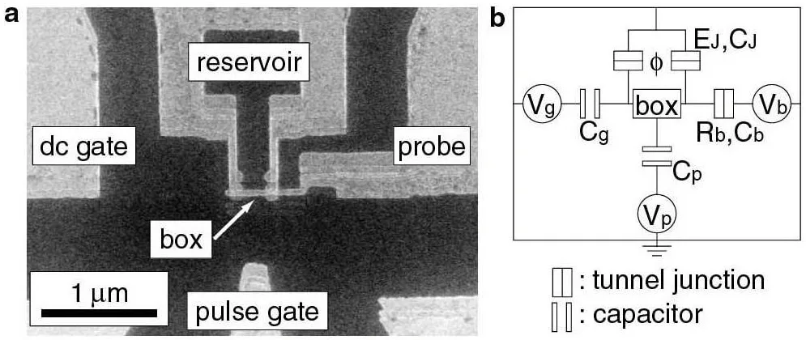
{kind=link}
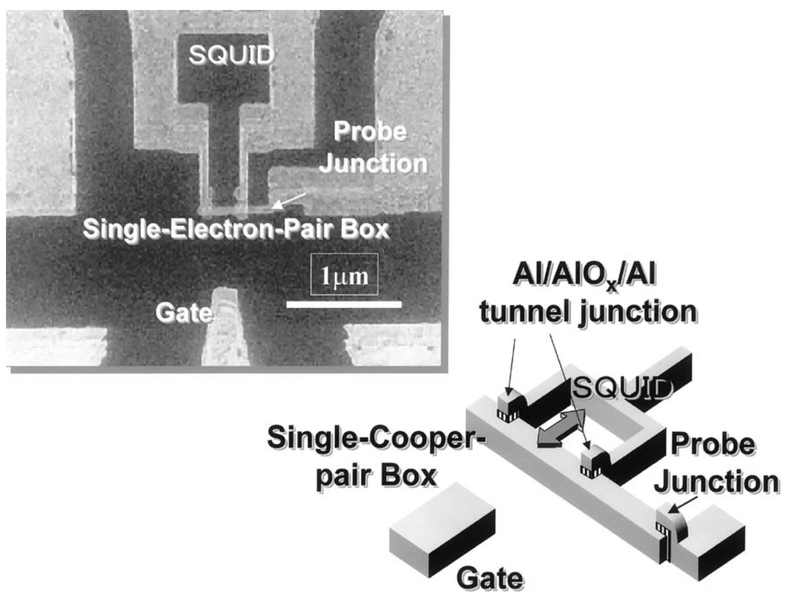
A dc gate sets the operating point, a pulse gate kicks it non-adiabatically, a probe junction reads it out.
Superconducting-qubit hardware layouts
{kind=link}
Superconducting-qubit hardware layouts
{kind=link}

How does a SQUID tune \(E_J\)?
Symmetric SQUID · step 1 of 2
The loop fixes the relative junction phase
{kind=link}
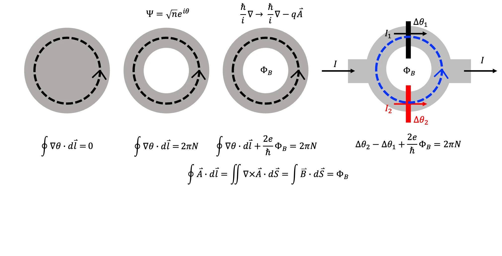
\[
\Phi_0 \equiv\frac{h}{2e},
\qquad \frac{2e}{\hbar}=\frac{2\pi}{\Phi_0}, \qquad
\Delta\theta_2=\Delta\theta_1
-2\pi\frac{\Phi_B}{\Phi_0}+2\pi N
\]
Symmetric SQUID · step 2 of 2
SQUID
\[
I=I_1+I_2
=I_c\sin\Delta\theta_1+I_c\sin\Delta\theta_2
\]
{kind=link}
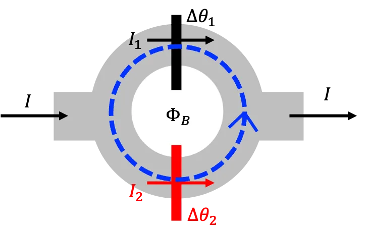
Insert the loop constraint
\[
\begin{aligned}
I&=I_c\!\left[
\sin\Delta\theta_1
+\sin\!\left(\Delta\theta_1-2\pi\frac{\Phi_B}{\Phi_0}+2\pi N\right)
\right]
=I_c\!\left[
\sin\Delta\theta_1
+\sin\!\left(\Delta\theta_1-2\pi\frac{\Phi_B}{\Phi_0}\right)
\right]
\end{aligned}
\]
Trigonometric identity
\[
\begin{gathered}
\sin a+\sin b
=2\cos\!\left(\frac{a-b}{2}\right) \sin\!\left(\frac{a+b}{2}\right) \quad \to \quad
I=
\underbrace{2I_c\cos\!\left(\pi\frac{\Phi_B}{\Phi_0}\right)}_{\equiv I_{SQUID}\left(\Phi_B \right)}
\sin\!\underbrace{\left(\Delta\theta_1-\pi\frac{\Phi_B}{\Phi_0}\right)}_{\equiv \varphi}
=I_{SQUID}\left(\Phi_B \right)\, \sin \varphi
\end{gathered}
\]
Josephson junction
\[ \begin{aligned} I&=I_c\sin\varphi,\quad L_J(\varphi) =\frac{\Phi_0}{2\pi I_c\cos\varphi} \end{aligned} \]SQUID
\[ \begin{aligned} I&=I_{\rm SQUID}(\Phi_B)\sin\varphi,\quad L_J(\Phi_B,\varphi) =\frac{\Phi_0}{2\pi I_{\rm SQUID}(\Phi_B)\cos\varphi} \end{aligned} \]SQUID · asymmetric
Asymmetric SQUID
{kind=link}
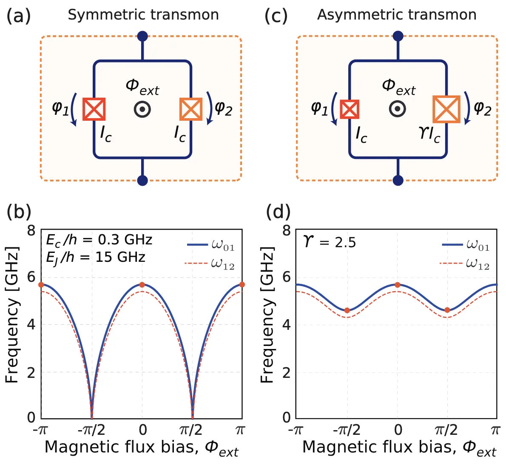
\[
\begin{aligned}
I&=I_{\rm SQUID}(\Phi_B)\sin\varphi,\\[-1pt]
L_{SQUID}(\Phi_B,\varphi)
&=\frac{\Phi_0}{2\pi \cdot 2I_c\cos\!\left(\pi\frac{\Phi_B}{\Phi_0}\right)\cdot\cos\varphi}
\end{aligned}
\]
Frequency follows the inductance
\[
\omega=\frac{1}{\sqrt{L_{\rm SQUID}\, C}}
\propto\sqrt{\cos\!\left(\pi\frac{\Phi_B}{\Phi_0}\right)}
\]
Asymmetric junctions
\[
\begin{gathered}
I_1=I_c,\qquad I_2=\gamma I_c,\\[2pt]
I=I_1\sin\Delta\theta_1
+\gamma I_1\sin\!\left(
\Delta\theta_1-2\pi\frac{\Phi_B}{\Phi_0}
\right),\\[3pt]
I_{\rm SQUID}(\Phi_B)
=I_c\sqrt{(1-\gamma)^2
+4\gamma\cos^2\!\left(\pi\frac{\Phi_B}{\Phi_0}\right)}
\end{gathered}
\]
Flux-bias on a real chip
{kind=link}
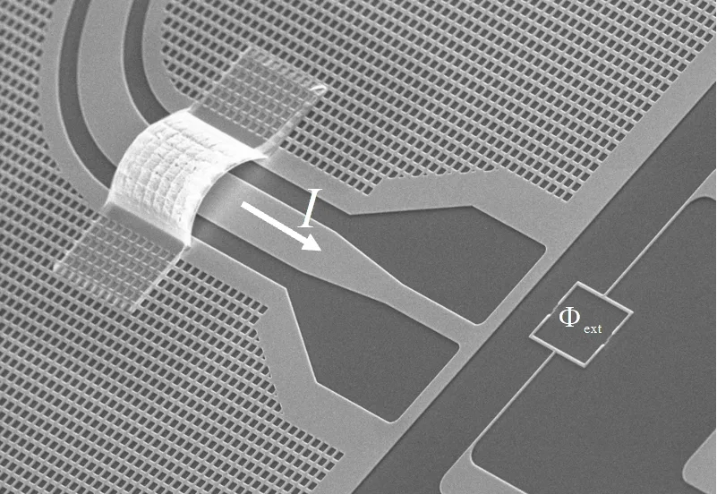
Control Circuit
Cooper-pair box · step 1 of 15
The Cooper-pair box circuit
Junction phase \(\varphi\), island voltage \(V\) (reservoir grounded):
\[ \dot{\varphi}=\frac{2eV}{\hbar},\qquad U_J=-E_J\cos\varphi \]Voltage stored on each capacitor:
\[ V_{C}=V,\qquad V_{C_g}=V-V_g \] \[ T=\frac{1}{2}CV^2+\frac{1}{2}C_g\left(V-V_g\right)^2 \]\(\mathcal{L}=T-U_J\):
\[
\mathcal{L}=\frac{1}{2}CV^2+\frac{1}{2}C_g\left(V-V_g\right)^2+E_J\cos\varphi
\]
\[
=\frac{1}{2}\left(C+C_g\right) V^2-C_gV_g\,V+\frac{1}{2}C_gV_g^2+E_J\cos\varphi
\]
Derivation follows J. Koch et al., Phys. Rev. A 76, 042319 (2007), DOI, and Y. Makhlin, G. Schön and A. Shnirman, Rev. Mod. Phys. 73, 357 (2001), DOI.
Cooper-pair box · step 2 of 15
Expand the Lagrangian
\[
\mathcal{L}=\frac{1}{2}\left(C+C_g\right) V^2-C_gV_g\,V+\frac{1}{2}C_gV_g^2+E_J\cos\varphi
\]
Substitute \(V=\frac{\hbar}{2e}\,\dot{\varphi}\):
\[
\mathcal{L}(\varphi,\dot{\varphi})=\frac{1}{2}\left(C+C_g\right)\left(\frac{\hbar}{2e}\right)^2\dot{\varphi}^2-C_gV_g\,\frac{\hbar}{2e}\,\dot{\varphi}+\frac{1}{2}C_gV_g^2+E_J\cos\varphi
\]
\[
p_\varphi
\equiv\frac{\partial\mathcal L}{\partial\dot{\varphi}}
=\left(C+C_g\right)\left(\frac{\hbar}{2e}\right)^2\dot{\varphi}
-C_gV_g\frac{\hbar}{2e}
\]
\[
\begin{aligned}
p_\varphi
&=C\left(\frac{\hbar}{2e}\right)V
+C_g\left(\frac{\hbar}{2e}\right)\left(V-V_g\right)\\[3pt]
&=\left(\frac{\hbar}{2e}\right)
\underbrace{\left[CV+C_g\left(V-V_g\right)\right]}_{Q_{\rm isl}}
=\left(\frac{\hbar}{2e}\right)Q_{\rm isl}\\[3pt]
Q_{\rm isl}&=2e\,n_{\rm tot}
\quad\Longrightarrow\quad
p_\varphi=\hbar n_{\rm tot}
\end{aligned}
\]
Cooper-pair box · step 4 of 15
The Legendre transform
Eliminate \(\dot{\varphi}\)
\[ \begin{aligned} p_\varphi \equiv\frac{\partial\mathcal L}{\partial\dot{\varphi}} =\left(C+C_g\right)\left(\frac{\hbar}{2e}\right)^2\dot{\varphi} -C_gV_g\frac{\hbar}{2e} \qquad \to \qquad \dot{\varphi} &=\frac{p_\varphi+C_gV_g\frac{\hbar}{2e}} {\left(C+C_g\right)\left(\frac{\hbar}{2e}\right)^2}\\[4pt] \end{aligned} \]Legendre transform in \(\dot{\varphi}\)
\[ \begin{aligned} \mathcal H &=p_\varphi\dot{\varphi}-\mathcal L=p_\varphi\dot{\varphi}-\left\{\frac{1}{2}\left(C+C_g\right)\left(\frac{\hbar}{2e}\right)^2\dot{\varphi}^2-C_gV_g\,\frac{\hbar}{2e}\,\dot{\varphi}+\frac{1}{2}C_gV_g^2+E_J\cos\varphi\right\}\\[3pt] \end{aligned} \] \[ \begin{aligned} &=p_\varphi \left[\frac{p_\varphi+C_gV_g\frac{\hbar}{2e}} {\left(C+C_g\right)\left(\frac{\hbar}{2e}\right)^2}\right] - \left\{\frac{1}{2}\left(C+C_g\right)\left(\frac{\hbar}{2e}\right)^2 \left[\frac{p_\varphi+C_gV_g\frac{\hbar}{2e}} {\left(C+C_g\right)\left(\frac{\hbar}{2e}\right)^2}\right]^2 -C_gV_g\frac{\hbar}{2e} \left[\frac{p_\varphi+C_gV_g\frac{\hbar}{2e}} {\left(C+C_g\right)\left(\frac{\hbar}{2e}\right)^2}\right] +\frac{1}{2}C_gV_g^2+E_J\cos\varphi\right\} \end{aligned} \] \[ =\frac{\left(p_\varphi+C_gV_g\frac{\hbar}{2e}\right)^2} {2\left(C+C_g\right)\left(\frac{\hbar}{2e}\right)^2} -\frac{1}{2}C_gV_g^2-E_J\cos\varphi \]
\[
n\equiv n_{\rm tot},\qquad p_\varphi=\hbar n
,\qquad E_C\equiv\frac{e^2}{2\left(C+C_g\right)}
,\qquad n_g\equiv\frac{C_gV_g}{-2e}
\]
Drop the constant \(-\frac{1}{2}C_gV_g^2\):
\[
\hat{\mathcal{H}}=4E_C\left(\hat{n}-n_g\right)^2-E_J\cos\hat{\varphi}
\]
The Physics of Cooper Pair Box
Cooper-pair box · step 7 of 15
Quantize in the charge basis
\[
\left[\hat{\varphi},\hat{p}_\varphi\right]=i\hbar\ \Longrightarrow\ \left[\hat{\varphi},\hat{n}\right]=i
\]
\[
\hat{\mathcal{H}}=\sum_{n\in\mathbb{Z}}4E_C\left(n-n_g\right)^2|n\rangle\langle n|-\frac{E_J}{2}\sum_{n\in\mathbb{Z}}\Big(|n+1\rangle\langle n|+|n\rangle\langle n+1|\Big)
\]
Basis \(\{\ldots,|{-1}\rangle_{\hat{n}},|0\rangle_{\hat{n}},|1\rangle_{\hat{n}},|2\rangle_{\hat{n}},\ldots\}\):
\[ \hat{\mathcal{H}}= \begin{pmatrix} \ddots & \vdots & \vdots & \vdots & \vdots & \\ \cdots & 4E_C(1+n_g)^2 & -E_J/2 & 0 & 0 & \cdots \\ \cdots & -E_J/2 & 4E_C\,n_g^2 & -E_J/2 & 0 & \cdots \\ \cdots & 0 & -E_J/2 & 4E_C(1-n_g)^2 & -E_J/2 & \cdots \\ \cdots & 0 & 0 & -E_J/2 & 4E_C(2-n_g)^2 & \cdots \\ & \vdots & \vdots & \vdots & \vdots & \ddots \end{pmatrix} \]
\[
\langle n|\hat{\mathcal{H}}|n\rangle=4E_C\left(n-n_g\right)^2
\]
\[
\langle n\pm1|\hat{\mathcal{H}}|n\rangle=-\frac{E_J}{2}
\]
Cooper-pair box · step 8 of 15
The charge-basis matrix, \(n_g=\frac{1}{2}\)
\[ \hat{\mathcal{H}}= \begin{pmatrix} \ddots & \vdots & \vdots & \vdots & \vdots & \\ \cdots & 4E_C(1+n_g)^2 & -E_J/2 & 0 & 0 & \cdots \\ \cdots & -E_J/2 & 4E_C\,n_g^2 & -E_J/2 & 0 & \cdots \\ \cdots & 0 & -E_J/2 & 4E_C(1-n_g)^2 & -E_J/2 & \cdots \\ \cdots & 0 & 0 & -E_J/2 & 4E_C(2-n_g)^2 & \cdots \\ & \vdots & \vdots & \vdots & \vdots & \ddots \end{pmatrix} \] \[ = \begin{pmatrix} \ddots & \vdots & \vdots & \vdots & \vdots & \\ \cdots & 9E_C & -E_J/2 & 0 & 0 & \cdots \\ \cdots & -E_J/2 & E_C & -E_J/2 & 0 & \cdots \\ \cdots & 0 & -E_J/2 & E_C & -E_J/2 & \cdots \\ \cdots & 0 & 0 & -E_J/2 & 9E_C & \cdots \\ & \vdots & \vdots & \vdots & \vdots & \ddots \end{pmatrix} \]The avoided crossing in the original paper
{kind=link}
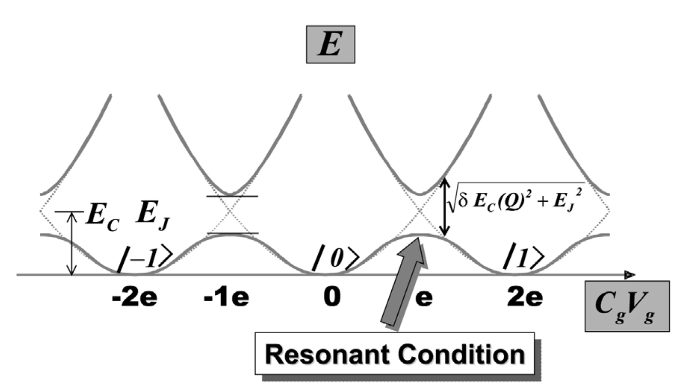
The dotted curves are the uncoupled charge states \(|n\rangle\). Josephson tunnelling mixes the two states and turns their crossing into the solid avoided crossing.
\[
\hbar\omega_{01}
=
\sqrt{
\left[8E_C\left(n_g-\frac12\right)\right]^2+E_J^2
}
\qquad\xrightarrow{\;n_g=1/2\;}\qquad
E_J
\]
Cooper-pair box · step 10 of 15
Diagonalize the two charge states
Near \(n_g=1/2\), retain only \(|0\rangle\) and \(|1\rangle\):
\[ \hat{\mathcal H}_{\{0,1\}} = \begin{pmatrix} 4E_Cn_g^2 & -E_J/2\\ -E_J/2 & 4E_C(1-n_g)^2 \end{pmatrix}. \]The eigenenergies \(E_\lambda\) obey
\[ \det\!\left( \hat{\mathcal H}_{\{0,1\}}-E_\lambda I \right)=0, \] \[ \left(4E_Cn_g^2-E_\lambda\right) \left(4E_C(1-n_g)^2-E_\lambda\right) -\frac{E_J^2}{4}=0. \]Solving the quadratic equation gives
\[ E_\lambda = 2E_C\!\left[n_g^2+(1-n_g)^2\right] \pm \frac12 \sqrt{ \left[8E_C\left(n_g-\frac12\right)\right]^2+E_J^2 }. \]
\[
\hbar\omega_{01}
=
E_{\lambda,+}-E_{\lambda,-}
=
\sqrt{
\left[8E_C\left(n_g-\frac12\right)\right]^2+E_J^2
}
\]
CPB control and readout
{kind=link}
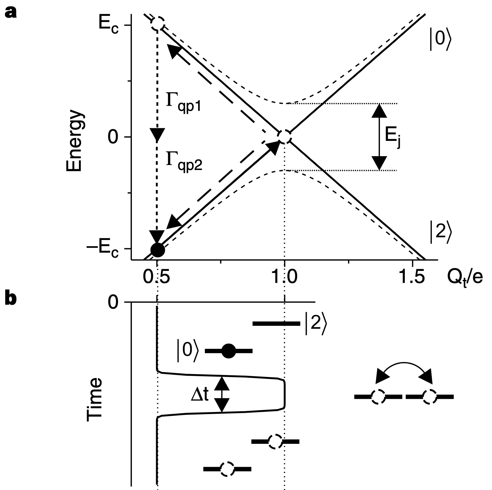
{kind=link}
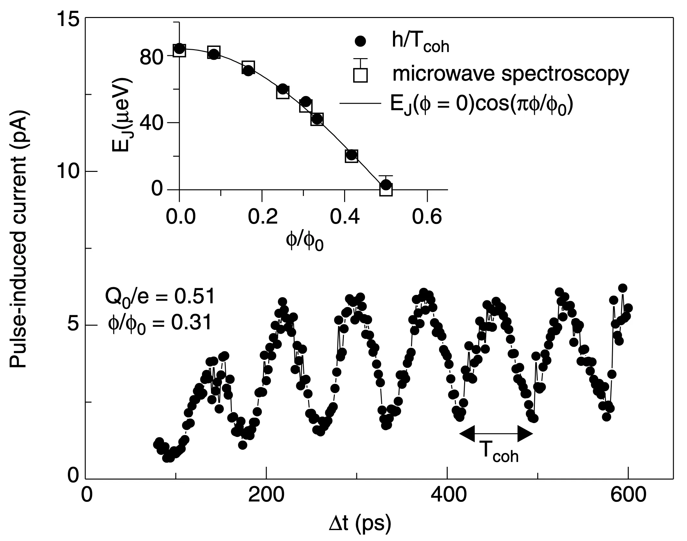
{kind=link}
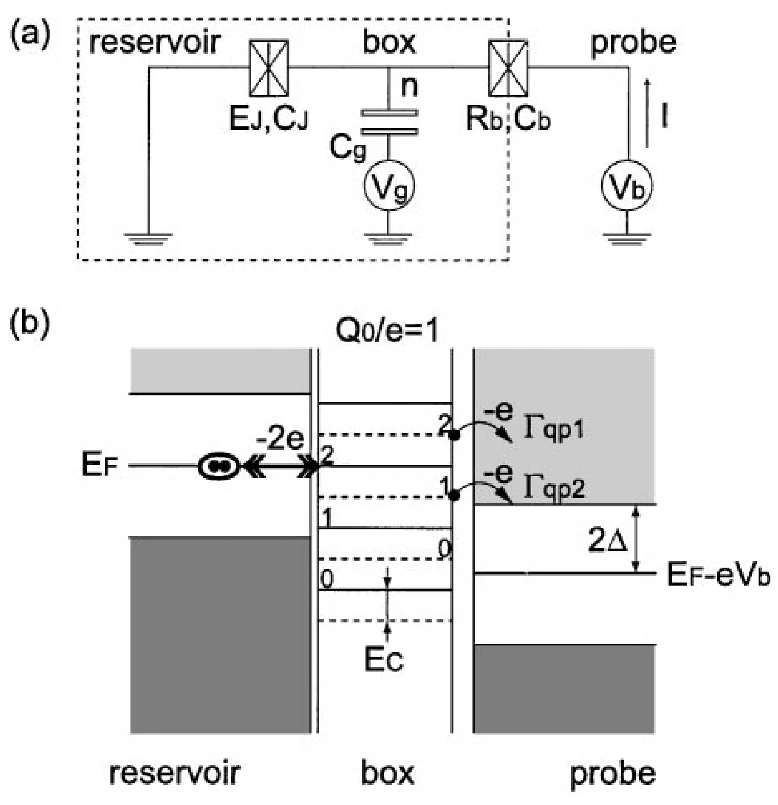
Visual answer
CPB \(\longrightarrow\) transmon
{kind=link}
{kind=link}
{kind=link}
\[
\underbrace{|\epsilon_m|}_{\text{charge dispersion}}
\propto e^{-\sqrt{8E_J/E_C}}
\qquad\text{vs.}\qquad
\underbrace{\frac{|\alpha|}{\hbar\omega_{01}}}_{\text{relative anharmonicity}}
\sim\frac{1}{\sqrt{8E_J/E_C}}
\]
Spectrum and \(\epsilon_m\): Koch et al., Phys. Rev. A 76, 042319 (2007), DOI.
Cooper-pair box · step 15 of 15
The sweet spot is curved and narrow
Write the gate charge as \(n_g=\tfrac12+\delta n_g\) and expand about the sweet spot:
\[
\hbar\omega_{01}\!\left(\tfrac12+\delta n_g\right)
=\hbar\omega_{01}\Big|_{\frac12}
+\frac{\partial\left(\hbar\omega_{01}\right)}{\partial n_g}\bigg|_{\frac12}\delta n_g
+\frac{1}{2}\frac{\partial^2\left(\hbar\omega_{01}\right)}{\partial n_g^2}\bigg|_{\frac12}\delta n_g^{2}
+\mathcal O\!\left(\delta n_g^{3}\right)
\]
Differentiate the diagonalized level spacing directly:
\[ \frac{\partial(\hbar\omega_{01})}{\partial n_g} = \frac{ 64E_C^2\left(n_g-\frac12\right) }{ \sqrt{ 64E_C^2\left(n_g-\frac12\right)^2+E_J^2 } }. \]
\[
\left.
\frac{\partial(\hbar\omega_{01})}{\partial n_g}
\right|_{n_g=1/2}
=0
\]
The remaining charge sensitivity is set by the curvature:
\[ \frac{\partial^2(\hbar\omega_{01})}{\partial n_g^2} = \frac{ 64E_C^2E_J^2 }{ \left[ 64E_C^2\left(n_g-\frac12\right)^2+E_J^2 \right]^{3/2} }. \]
\[
\left.
\frac{\partial^2(\hbar\omega_{01})}{\partial n_g^2}
\right|_{n_g=1/2}
=
\frac{64E_C^2}{E_J}
\]
Close to \(n_g=1/2\), the level spacing is therefore
\[ \hbar\omega_{01} \approx E_J + 32\frac{E_C^2}{E_J} \left(n_g-\frac12\right)^2. \]The first-order charge sensitivity vanishes exactly at the sweet spot, but the quadratic sensitivity grows as \(E_C^2/E_J\).
AC Control on Transmon
Interaction Picture
Transmon drive · 1 of 16
A capacitively driven transmon
\[
\mathcal{H}=4E_{C}\left(n-n_g\right)^2-E_J\cos\varphi, \qquad n_g(t)=-\frac{C_gV_g(t)}{2e}, \qquad E_C=\frac{e^2}{2\left(C+C_g\right)}
\]
\[
\text{Drop }n_g^2 \quad \to \quad
\mathcal H(t)=
\underbrace{4E_Cn^2-E_J\cos\varphi}_{\mathcal H_0}
+\underbrace{\left[-8E_Cn_g(t)n\right]}_{\mathcal H_d(t)}
\]
\[
\hat{\varphi} = \left(\frac{2E_C}{E_J}\right)^{1/4}\left(a+a^{\dagger}\right),
\qquad
\hat{n} = \frac{i}{2}\left(\frac{E_J}{2E_C}\right)^{1/4}\left(a^{\dagger}-a\right)
, \qquad \hbar\omega_p=\sqrt{8E_JE_C}
\]
\[
\mathcal H_d(t)=-8E_C \cdot \left(-\frac{C_gV_g(t)}{2e}\right)\cdot \frac{i}{2}\left(\frac{E_J}{2E_C}\right)^{1/4}\left(a^{\dagger}-a\right)
\]
\[
=2i \cdot \left(\frac{C_gV_g(t)}{e}\right)\cdot \left(\frac{E_C^2 \cdot 8E_C E_J}{2\cdot 8}\right)^{1/4}\cdot\left(a^{\dagger}-a\right)
\]
\[
=i \cdot \left(\frac{C_gV_g(t)}{e}\right) \sqrt{E_C \hbar \omega_p }\cdot\left(a^{\dagger}-a\right)
\]
\[
=i\hbar\cdot C_gV_g(t) \sqrt{\frac{ \omega_p}{2\hbar\left(C+C_g\right)} }\cdot\left(a^{\dagger}-a\right)
\]
\[
\equiv i\hbar\cdot\Omega(t)\cdot\left(a^{\dagger}-a\right)
\]
Rotating frame · 1 of 3
Free evolution in the lab frame
\[
\mathcal H(t)=\mathcal H_0+\mathcal H_d(t),
\qquad
\mathcal H_d(t)=0
\quad\Longrightarrow\quad
\mathcal H=\mathcal H_0
\]
\[
\mathcal H_0
=\begin{pmatrix}E_0&0\\[2pt]0&E_1\end{pmatrix}
=\frac{E_0+E_1}{2}\,\begin{pmatrix}1&0\\0&1\end{pmatrix}
-\frac{E_1-E_0}{2}\,\begin{pmatrix}1&0\\0&-1\end{pmatrix}
\]
\[
\equiv \bar E\,\mathbb I
-\frac{\hbar\omega_{01}}{2}\,\sigma_z
\]
\[ \bar E\equiv\frac{E_0+E_1}{2},\quad \hbar\omega_{01}\equiv E_1-E_0 \]
\[
|\psi_{\rm lab}(t)\rangle
=U_0(t,0)|\psi_{\rm lab}(0)\rangle
\]
\[
=\exp\!\left[-\frac{i}{\hbar}
\int_0^t\mathcal H_0\,dt'\right]*|\psi_{\rm lab}(0)\rangle,
\]
\[
=\underbrace{e^{-i\bar Et/\hbar}}_{\text{common phase}}
\exp\!\left(+\frac{i\omega_{01}t}{2}\sigma_z\right)*|\psi_{\rm lab}(0)\rangle
\]
{kind=link}
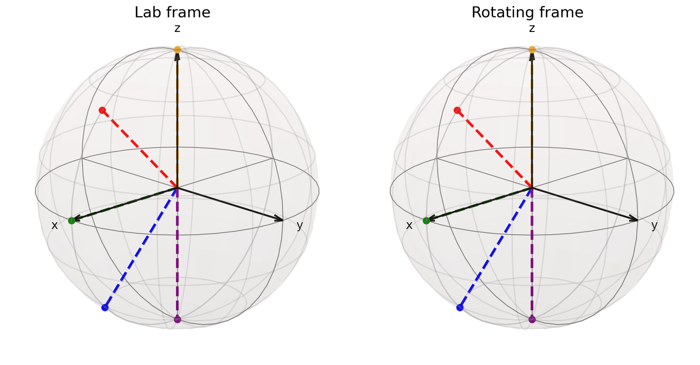
Rotating frame · 2 of 3
Rotating frame for \(\mathcal H_0\)
\[
\begin{aligned}
U_0(t)&=e^{-i\mathcal H_0t/\hbar},
&U_0^\dagger(t)U_0(t)&=\mathbb I,\\
|\Theta(t)\rangle&=U_0^\dagger(t)|\psi_{\rm lab}(t)\rangle
\end{aligned}
\]
\[
i\hbar\partial_t U(t)=\mathcal H_0U_0(t)
\]
\[
-i\hbar\partial_t U^\dagger(t)=U_0^\dagger(t)\mathcal H_0 \quad \to \quad i\hbar\partial_t U^\dagger(t)=-U_0^\dagger(t)\mathcal H_0
\]
\[
i\hbar\,\partial_t|\Theta(t)\rangle
=i\hbar\,\partial_t
\left[U_0^\dagger(t)|\psi_{\rm lab}(t)\rangle\right]
\]
\[
=\left[i\hbar\partial_t U^\dagger(t)\right]|\psi_{\rm lab}(t)\rangle +U_0^\dagger(t)
\left[i\hbar\,\partial_t|\psi_{\rm lab}(t)\rangle\right]
\]
\[
=-U_0^\dagger\mathcal H_0|\psi_{\rm lab}\rangle +U_0^\dagger\mathcal H_0|\psi_{\rm lab}\rangle=0
\]
\[
|\Theta(t)\rangle=|\Theta(0)\rangle
\]
Rotating frame · 3 of 3
Interaction-picture Hamiltonian
\[
i\hbar\,\partial_t|\psi_{\rm lab}\rangle
=\left[\mathcal H_0+\mathcal H_d(t)\right]|\psi_{\rm lab}\rangle,
\qquad
|\Theta\rangle=U_0^\dagger|\psi_{\rm lab}\rangle,
\qquad
i\hbar\partial_t U^\dagger=-U_0^\dagger\mathcal H_0
\]
\[
i\hbar\,\partial_t|\Theta\rangle
=i\hbar\,\partial_t
\left[U_0^\dagger|\psi_{\rm lab}\rangle\right]
\]
\[
=\left(i\hbar\partial_t U^\dagger\right)|\psi_{\rm lab}\rangle
+U_0^\dagger\left(i\hbar\,\partial_t|\psi_{\rm lab}\rangle\right)
\]
\[
=-U_0^\dagger\mathcal H_0|\psi_{\rm lab}\rangle
+U_0^\dagger\left(\mathcal H_0+\mathcal H_d\right)|\psi_{\rm lab}\rangle
\]
\[
=U_0^\dagger\mathcal H_d|\psi_{\rm lab}\rangle
\]
\[
=U_0^\dagger\mathcal H_dU_0|\Theta\rangle
\]
\[
\boxed{
i\hbar\,\partial_t|\Theta(t)\rangle
=\mathcal H_I(t)|\Theta(t)\rangle},
\qquad
\mathcal H_I(t)\equiv U_0^\dagger(t)\mathcal H_d(t)U_0(t)
\]
\[
|\Theta(t)\rangle
=\mathcal T\exp\!\left[-\frac{i}{\hbar}
\int_0^t\mathcal H_I(s)\,ds\right]|\Theta(0)\rangle
\]
Transmon drive · 11 of 16
At the oscillator stage, rotate with \(\omega_p\)
Start from the driven transmon
\[
\begin{aligned}
\mathcal H(t)&=\mathcal H_0+\mathcal H_d(t)
=\left\{\hbar\omega_p\!\left(a^\dagger a+\frac12\right)
-...\right\}
+\left\{i\hbar\Omega(t)(a^\dagger-a)\right\},\quad
\hbar\omega_p=\sqrt{8E_JE_C}
,\quad
\Omega(t)=C_gV_g(t) \sqrt{\frac{ \omega_p}{2\hbar\left(C+C_g\right)} }
\end{aligned}
\]
Choose the harmonic part as the reference
\[
\begin{aligned}
\mathcal H_p&\equiv
\hbar\omega_p\!\left(a^\dagger a+\frac12\right), \qquad
U_p(t)=e^{-i\mathcal H_pt/\hbar}, \qquad
[a^\dagger a,a] =-a, \qquad [a^\dagger a,a^\dagger] =+a^\dagger
\end{aligned}
\]
Transform \(a\) and \(a^\dagger\)
\[
\begin{aligned}
\frac{d}{dt}\!\left(U_p^\dagger aU_p\right)
&=\frac{i}{\hbar}U_p^\dagger[\mathcal H_p,a]U_p
=-i\omega_p\left(U_p^\dagger aU_p\right),\\[2pt]
U_p^\dagger aU_p&=ae^{-i\omega_pt},
\qquad
U_p^\dagger a^\dagger U_p=a^\dagger e^{+i\omega_pt}
\end{aligned}
\]
Transform the remaining Hamiltonian
\[
\begin{aligned}
U_p^\dagger \mathcal H_d U_p
=U_p^\dagger \cdot i\hbar\Omega(t)(a^\dagger-a) \cdot U_p
=i\hbar\Omega(t)
\left(a^\dagger e^{+i\omega_pt}-ae^{-i\omega_pt}\right)
\end{aligned}
\]
Transmon drive · 12 of 16
Rotating Wave Approximation (RWA)
The drive, already rotated
\[
\mathcal H_I(t)=U_p^\dagger\mathcal H_d(t)U_p
=i\hbar\Omega(t)\left(a^\dagger e^{+i\omega_pt}-ae^{-i\omega_pt}\right),
\qquad
V_g(t)=V_0 \, f(t)
,\qquad
\Omega(t)=\underbrace{C_gV_0 \sqrt{\frac{ \omega_p}{2\hbar\left(C+C_g\right)} }}_{\equiv \Omega} *f(t)
\]
Drive on resonance and write the tone in exponentials
\[
\mathcal H_I(t)\Big|_{f(t)=\sin\omega_pt}
=i\hbar\Omega\cdot\frac{e^{+i\omega_pt}-e^{-i\omega_pt}}{2i}
\cdot\left(a^\dagger e^{+i\omega_pt}-ae^{-i\omega_pt}\right)
\]
\[
=\frac{\hbar\Omega}{2}\left(e^{+i\omega_pt}-e^{-i\omega_pt}\right)
\left(a^\dagger e^{+i\omega_pt}-ae^{-i\omega_pt}\right)
\]
\[
=\frac{\hbar\Omega}{2}\Big[\,
{-\left(a^\dagger+a\right)}
\;+\;
\underbrace{\left(a^\dagger e^{+2i\omega_pt}+ae^{-2i\omega_pt}\right)}_{\textstyle \text{turns at }2\omega_p}
\Big]
\]
\[
\overset{RWA}{\sim} -\frac{\hbar\Omega}{2}\left(a+a^\dagger\right)
\]
What that operator does
\[ \left(a^\dagger-a\right)\left|0\right\rangle=a^\dagger\left|0\right\rangle=\left|1\right\rangle \] \[ \left(a^\dagger-a\right)\left|1\right\rangle=-a\left|1\right\rangle=-\left|0\right\rangle \]Transmon drive · 13 of 16
The phase of the tone is the axis
Same step, now with a phase on the tone
\[
\mathcal H_I(t)\Big|_{f(t)=\sin\left(\omega_pt+\phi\right)}
=\frac{\hbar\Omega}{2}\left(e^{+i\left(\omega_pt+\phi\right)}-e^{-i\left(\omega_pt+\phi\right)}\right)
\left(a^\dagger e^{+i\omega_pt}-ae^{-i\omega_pt}\right)
\]
\[
=\frac{\hbar\Omega}{2}\Big[\,
{-\left(ae^{+i\phi}+a^\dagger e^{-i\phi}\right)}
\;+\;
\underbrace{\left(a^\dagger e^{+i\left(2\omega_pt+\phi\right)}+ae^{-i\left(2\omega_pt+\phi\right)}\right)}_{\textstyle \text{turns at }2\omega_p}
\Big]
\]
\[
\overset{RWA}{\sim}-\frac{\hbar\Omega}{2}\left(ae^{+i\phi}+a^\dagger e^{-i\phi}\right)
\]
\[
=-\frac{\hbar\Omega}{2}\left(
\cos\phi \cdot\underbrace{\left(a+a^\dagger\right)}_{\textstyle \to\,\sigma_x}
\;-\;\sin\phi\cdot\underbrace{i\left(a^\dagger-a\right)}_{\textstyle \to\,\sigma_y}
\right)
\]
Why a Pauli matrix may stand in
Keep only \(\left|0\right\rangle,\left|1\right\rangle\). The ladder operators then have one matrix element each:
\[ \begin{aligned} a&\to\left|0\right\rangle\left\langle1\right|=\begin{pmatrix}0&1\\0&0\end{pmatrix}\\[2pt] a^\dagger&\to\left|1\right\rangle\left\langle0\right|=\begin{pmatrix}0&0\\1&0\end{pmatrix} \end{aligned} \]
\[
\begin{aligned}
a+a^\dagger&\to\begin{pmatrix}0&1\\0&0\end{pmatrix}+\begin{pmatrix}0&0\\1&0\end{pmatrix}=\sigma_x\\[2pt]
i\left(a^\dagger-a\right)&\to i\left(\begin{pmatrix}0&0\\1&0\end{pmatrix}-\begin{pmatrix}0&1\\0&0\end{pmatrix}\right)=\sigma_y
\end{aligned}
\]
\[
\mathcal H_{\rm RWA}
\;\xrightarrow[\ \text{two levels}\ ]{}\;
-\frac{\hbar\Omega}{2}\left(\cos\phi\,\sigma_x-\sin\phi\,\sigma_y\right)
\equiv-\frac{\hbar\Omega}{2}\,\hat{n}\cdot\vec{\sigma},
\qquad
\hat{n}=\left(\cos\phi,\,-\sin\phi,\,0\right)
\]
Transmon drive · 14 of 16
Rabi Oscillation
\[
i\hbar\,\partial_t\left|\Theta(t)\right\rangle
=\mathcal H_I(t)\left|\Theta(t)\right\rangle,
\qquad
\left|\Theta(t)\right\rangle
=\mathcal T\exp\!\left[-\frac{i}{\hbar}\int_0^t\mathcal H_I(s)\,ds\right]
\left|\Theta(0)\right\rangle
\]
Take \(f(t)=\sin\, \omega_p t\)
\[ \mathcal H_I(t)\overset{RWA}{\sim}-\frac{\hbar\Omega}{2}\,\sigma_x \] \[ U_I(t) =e^{-i\mathcal H_I t/\hbar} =e^{+i\frac{\Omega t}{2}\sigma_x}=I\cos\frac{\Omega t}{2} +i\sigma_x\sin\frac{\Omega t}{2} \] \[ =\begin{pmatrix} \cos\frac{\Omega t}{2} & i\sin\frac{\Omega t}{2}\\ i\sin\frac{\Omega t}{2} & \cos\frac{\Omega t}{2} \end{pmatrix} \]Start in the ground state \(|0\rangle\) and read the population
\[ U_I(t)\left|0\right\rangle =\cos\frac{\Omega t}{2}\left|0\right\rangle +i\sin\frac{\Omega t}{2}\left|1\right\rangle \]
\[
P_1(t)=\left|\left\langle1\right|U_I(t)\left|0\right\rangle\right|^2
=\sin^2\frac{\Omega t}{2}=\frac{1-\cos\Omega t}{2}
\]
The population swings \(0\to1\to0\) at the Rabi frequency \(\Omega\).
{kind=link}
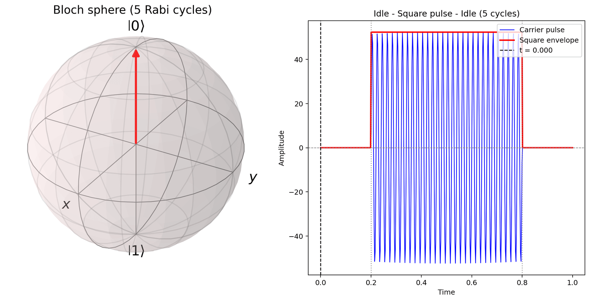
{kind=link}
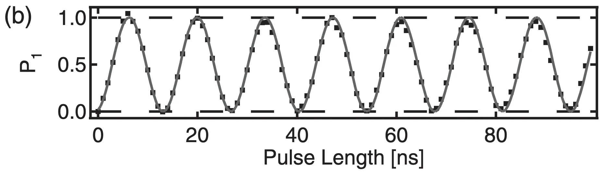
Control · step 12 of 24
Rotate every rung at \(\omega_d\)
Step 10 rotated two levels. Rotate all of them at once, each by its own rung number:
\[ \hat{U}(t)=e^{i\omega_dt\,a^\dagger a}, \qquad \hat{\mathcal{H}}_{\rm rot}=\hat{U}\hat{\mathcal{H}}\hat{U}^\dagger+i\hbar\left(\partial_t\hat{U}\right)\hat{U}^\dagger \]Diagonal, at \(\omega_d=\omega_{01}\):
\[ E_j-j\hbar\omega_d=\frac{j\left(j-1\right)}{2}\alpha \]For \(s(t)=1\) and \(\phi_d=0\):
\[ i\sin(\omega_dt) \left(a^\dagger e^{i\omega_dt}-ae^{-i\omega_dt}\right) =-\frac{a^\dagger+a}{2} +\frac{a^\dagger e^{2i\omega_dt}+ae^{-2i\omega_dt}}{2} \]Drop \(2\omega_d\), then rephase \(|j\rangle\to(-1)^j|j\rangle\)
\[
\hat{\mathcal{H}}_{\rm rot}=\begin{pmatrix}
0 & \hbar\Omega/2 & 0 & 0 & \cdots\\
\hbar\Omega/2 & 0 & \sqrt{2}\hbar\Omega/2 & 0 & \cdots\\
0 & \sqrt{2}\hbar\Omega/2 & \alpha & \sqrt{3}\hbar\Omega/2 & \cdots\\
0 & 0 & \sqrt{3}\hbar\Omega/2 & 3\alpha & \cdots\\
\vdots & \vdots & \vdots & \vdots & \ddots
\end{pmatrix}
\]
\(\omega_{01}\) has left the matrix: the qubit block is degenerate and every rung above it is raised by the anharmonicity alone — \(|2\rangle\) by \(\alpha\), \(|3\rangle\) by \(3\alpha\). That is why \(\alpha\) is the only energy in the leakage problem.
Control · step 14 of 24
The isolated \(|1\rangle\leftrightarrow|2\rangle\) estimate
\[
\frac{\hat{\mathcal H}_{12}}{\hbar}
=\begin{pmatrix}
0 & \Omega/\sqrt2\\
\Omega/\sqrt2 & \alpha/\hbar
\end{pmatrix},
\qquad
\begin{pmatrix}c_1(0)\\c_2(0)\end{pmatrix}
=\begin{pmatrix}1\\0\end{pmatrix}.
\]
\[
\boxed{
P_{1\to2}^{(2)}(t)=
\frac{2\Omega^2}{2\Omega^2+(\alpha/\hbar)^2}
\sin^2\!\left[
\frac{t}{2}\sqrt{2\Omega^2+(\alpha/\hbar)^2}
\right]}
\]
\[
\boxed{
\begin{aligned}
P_{1\to2,\max}^{(2)}
&=\frac{2(\hbar\Omega/\alpha)^2}
{1+2(\hbar\Omega/\alpha)^2}
=2\left(\frac{\hbar\Omega}{\alpha}\right)^2
-4\left(\frac{\hbar\Omega}{\alpha}\right)^4
+8\left(\frac{\hbar\Omega}{\alpha}\right)^6-\cdots
\end{aligned}}
\qquad
2\left(\frac{\hbar\Omega}{\alpha}\right)^2<1.
\]
This exact two-level result gives the clearest spectral-isolation estimate. It removes \(|0\rangle\); the next pages restore both paths and compute the actual three-level gate dynamics.
CPB \(\leftrightarrow\) transmon: dispersion versus anharmonicity
\[
\hbar\omega_{01}\simeq\sqrt{8E_JE_C}-E_C,
\qquad
\alpha\simeq-E_C.
\]
Charge dispersion:
\[ \boxed{\varepsilon_{01}\propto e^{-\sqrt{8E_J/E_C}}} \]Relative anharmonicity:
\[ \boxed{ \frac{|\alpha|}{\hbar\omega_{01}} \simeq \frac{E_C}{\sqrt{8E_JE_C}-E_C} \sim\frac{1}{\sqrt{8E_J/E_C}}} \]
\[
\frac{E_J}{E_C}\uparrow:\qquad
\underbrace{\varepsilon_{01}\downarrow\downarrow}_{\text{exponentially quieter}}
\qquad\text{but}\qquad
\underbrace{\frac{|\alpha|}{\hbar\omega_{01}}\downarrow}_{\text{weaker spectral isolation}}.
\]
\[
P_{\rm leak}=O\!\left[\left(\frac{\hbar\Omega}{\alpha}\right)^2\right],
\qquad
\boxed{\hbar\Omega\ll|\alpha|\simeq E_C}.
\]
CPB: large charge dispersion but strong anharmonicity. Transmon: exponentially suppressed charge dispersion but smaller relative anharmonicity. The practical operating point buys noise immunity while keeping enough \(|\alpha|\) for fast gates.
PHYS598500 · Week 3